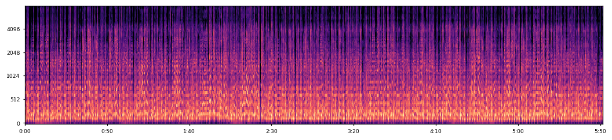
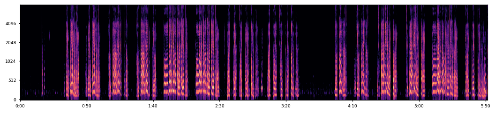
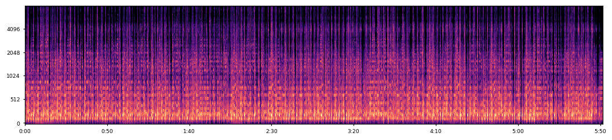
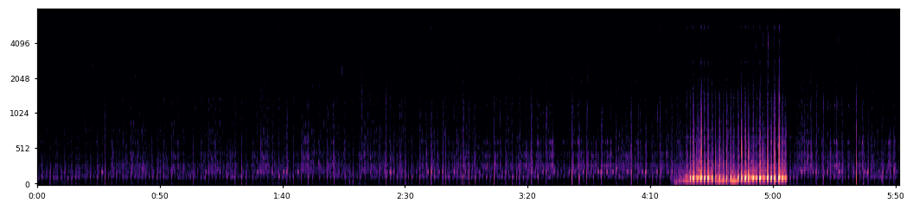
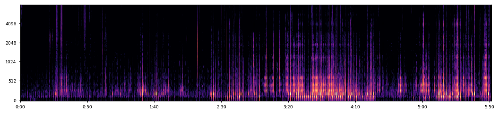
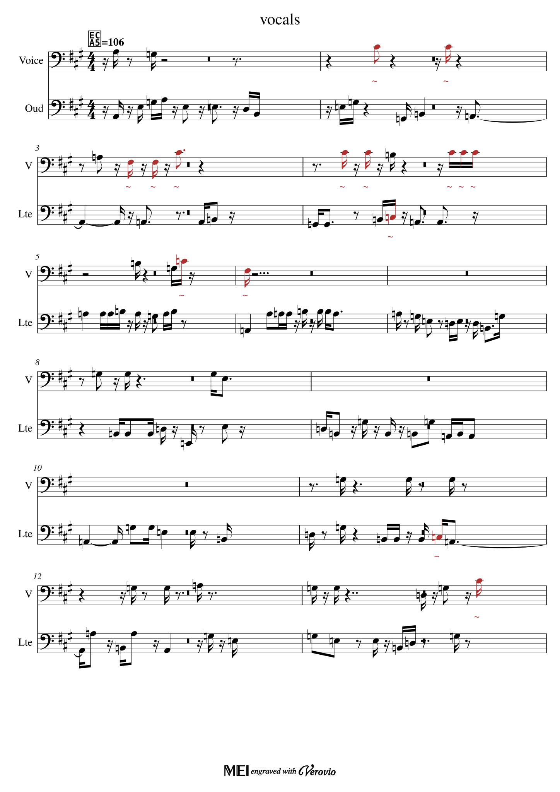
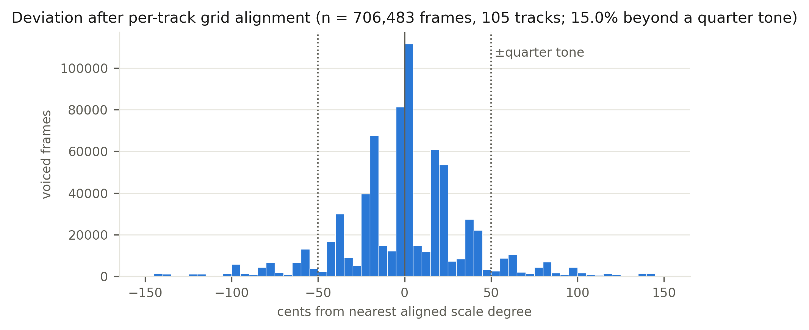
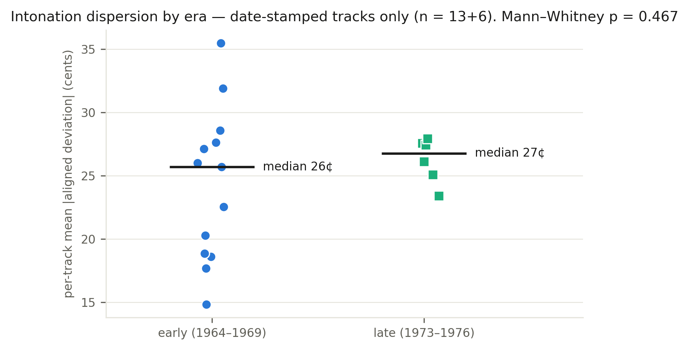
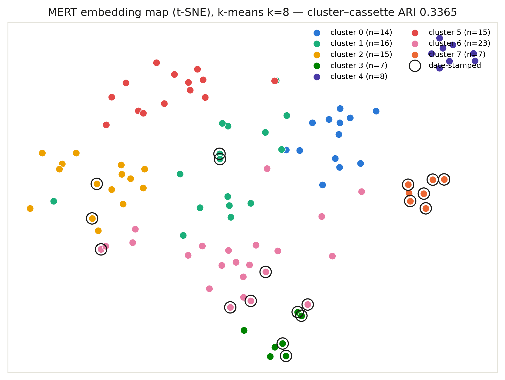

Machine Listening for Somali Music
Demonstrations — Khalid Ibrahim · Somali Music Archive research platform
The Archive QaraamiGen Studio Live transcription tool
These demonstrations show a machine-listening pipeline built for a musical tradition rather than adapted to it after the fact: source separation of qaraami band recordings, transcription that treats the pentatonic modal system and its microtonal inflections as first-class structure, and corpus-level analyses of what the models learn from 20th-century Somali recordings. Every number on this page is measured output of the running system — nothing is illustrative.
1 · Source separation on a qaraami recording
A single mixed recording (voice, kaban/oud, bass, percussion) is decomposed into four stems; each downstream analysis then listens only to the source it concerns. Listen to the mixture, then to each extracted source; the mel-spectrograms show what the separator isolated.
| Source | Listen | Mel-spectrogram (0–8 kHz) |
|---|---|---|
| Mixture |  | |
| Voice |  | |
| Kaban / strings |  | |
| Bass |  | |
| Percussion |  |
Separation: hybrid-transformer demixing, one pass, four stems. The voice stem feeds a dedicated 10 ms pitch tracker; the strings stem is transcribed inside the kaban's register (70–900 Hz) so neighbouring sources' harmonics are shed; percussion drives the beat tracker that the rhythm grid follows through rubato.
2 · Transcription that respects the modal system
The same recording, transcribed to a two-staff score — Voice (532 notes from the 10 ms vocal tracker) over Kaban (842 notes). The system detected tonic A, pentatonic degrees {2, 4, 7, 9, 11}, a corpus-typical tape/tuning offset of +17.3 cents, and 106 BPM tracked across 612 beats rather than one fixed tempo. Of the vocal notes, 354 snapped to the detected scale within tolerance and 178 were preserved unsnapped and marked (red noteheads, “~”) — the melisma and microtonal inflections that a Western 12-TET pipeline would erase.

MusicXML MIDI — open in MuseScore/Finale; red notes carry the preserved inflections.
Ablation on 1,073 held-out clips: forcing Western key correction alters 77.4% of notes and lowers pentatonic conformity from 0.898 to 0.862 — evidence that the tradition-aware stage is doing real musical work, not cosmetic relabelling.
3 · What the machine learned about the tradition
3.1 · The pentatonic grid is real — once you align per performance

3.2 · Tuning practice is stable across eras

3.3 · The corpus organises itself by musical similarity

4 · Method notes and limitations
Pipeline: four-stem source separation → per-source transcription (10 ms monophonic f0 tracking with vibrato-aware note segmentation for voice; register-primed polyphonic note detection for instruments) → per-track tonic and pentatonic-degree estimation with octave folding → tolerance-based snapping that marks rather than corrects out-of-grid notes → beat-tracked rhythm quantisation → engraved MusicXML/MIDI/SVG.
Limitations, stated plainly: no ground-truth MIDI exists for this corpus, so note-level
F1 is non-computable — evaluation relies on the ablations and corpus statistics above,
and a human-correction loop is the intended path to labelled data. Corpus licensing is
under audit (license_status=unknown throughout), so generative models
trained on it remain gated from public serving.